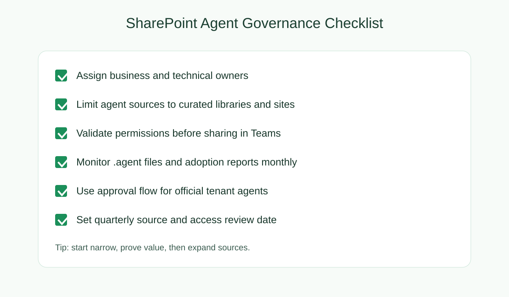
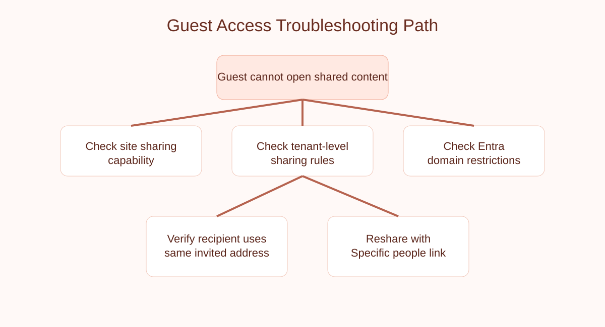

Table of Contents
What is Copilot Cowork?
Copilot Cowork is Microsoft's execution layer for Microsoft 365, enabling teams to delegate tasks, coordinate workflows, and maintain control over multi-step processes through conversational AI. As the fastest-growing feature in Microsoft's Frontier program with the highest user satisfaction rates, Cowork represents a fundamental shift in how teams collaborate on complex projects.
Unlike traditional task management tools, Cowork operates as an agentic AI that understands context, manages dependencies, and coordinates actions across teams and applications in real-time.

Benefits for Multi-Team Environments
- Task Delegation at Scale: Distribute complex tasks across teams with automatic status tracking
- Cross-Team Coordination: Synchronize workflows between SharePoint, Teams, Outlook, and Dynamics 365
- Reduced Manual Work: Eliminate repetitive coordination emails and status meetings
- Improved Visibility: Real-time dashboard of all delegated tasks and their progress
- Faster Time-to-Resolution: Automate handoffs between teams and reduce bottlenecks
- Audit Trail: Complete history of all actions, approvals, and modifications
Prerequisites and Setup
Licensing Requirements
- Microsoft 365 Copilot subscription (available with Enterprise or premium SKUs)
- Microsoft 365 Business Standard or Enterprise
- Teams integration enabled
- Dynamics 365 plugins (optional, but recommended for enterprise workflows)
Access Requirements
- Tenant admin privileges for initial setup
- Teams or SharePoint site owner status for workflow configuration
- Power Automate permissions to create cloud flows
Infrastructure Checklist
- Azure AD tenant configured with proper group policies
- SharePoint Modern Sites set up for team repositories
- Teams channels organized by workflow stage or department
- Dynamics 365 or third-party app connectors registered
Implementation Steps
Step 1: Enable Copilot Cowork
- Navigate to Microsoft 365 admin center
- Go to Settings > Org Settings > Microsoft 365 Copilot
- Enable "Copilot Cowork" for your tenant
- Configure user access policies (all users or specific groups)
- Review data residency and compliance settings

Step 2: Configure Teams and SharePoint Integration
- Create dedicated Teams channels for workflow coordination
- Link SharePoint document libraries to workflow channels
- Set up Teams connectors for status updates
- Configure permissions to match organizational structure
Step 3: Set Up Power Automate Connectors
- Authenticate with Dynamics 365, custom APIs, or third-party apps
- Create flows for common workflow patterns (approval, escalation, handoff)
- Test flows end-to-end before deploying to production
- Document flow dependencies and trigger conditions
Step 4: Train User Groups
- Create Cowork training materials specific to your workflows
- Identify power users from each team
- Run pilot programs with early adopter groups
- Gather feedback and iterate before full rollout
Building Multi-Team Workflows
Example 1: Cross-Department Project Approval
Scenario: A project proposal needs review from Finance, HR, and IT before kickoff.
- Initiator creates proposal in SharePoint and asks Cowork to review
- Cowork automatically routes to Finance for budget review
- Upon Finance approval, escalates to HR for resource planning
- IT reviews technical requirements independently
- Final approval aggregated and kickoff scheduled automatically

Example 2: Incident Response Coordination
Scenario: Security incident requires coordinated response from multiple teams.
- Alert triggers Cowork workflow instantiation
- Security team gets escalation notification
- Operations team receives remediation tasks
- Communications team prepares status updates
- Executive team receives hourly briefings

Example 3: Content Publication Pipeline
Scenario: Blog content requires writing, review, design, and publication.
- Writer completes draft in Teams
- Cowork routes to editorial review
- Design team gets notification upon approval
- Assets prepared in parallel with copyediting
- Final publication scheduled and distributed
Best Practices for Multi-Team Success
Workflow Design
- Keep workflows simple initially: Start with 3-4 stage workflows before advancing to complex pipelines
- Identify dependencies: Map which tasks must complete before others can start
- Set clear deadlines: Define SLAs for each workflow stage
- Use conditional logic: Branch workflows based on outcomes or escalation triggers
Team Coordination
- Assign owners: Each workflow stage should have a clear team owner
- Regular sync meetings: Weekly reviews of workflow metrics and bottlenecks
- Escalation protocols: Define who to contact if a task stalls
- Cross-team documentation: Maintain shared knowledge base of workflow processes
Governance and Compliance
- Audit trail review: Monthly review of who modified which tasks
- Data retention policies: Archive completed workflows per retention schedule
- Access control: Use Teams members list to manage who sees workflow data
- Compliance monitoring: Track SLA adherence and escalations
Performance Optimization
- Monitor completion times: Identify consistently slow stages and investigate
- Parallel processing: Run independent tasks simultaneously when possible
- Automation acceleration: Automate routine approvals (e.g., < $500 expenses)
- Feedback loops: Continuously refine workflows based on team input
Troubleshooting Common Issues
Task Assignments Not Triggering
Cause: Power Automate flow error or Teams connector misconfigured
Solution: Check flow run history in Power Automate; verify Teams channel connections are active
Delegated Tasks Stuck in Status
Cause: Recipient unavailable or permission issues
Solution: Check user status in Teams; verify task assignee has permission to SharePoint documents
Missing Workflow History
Cause: Audit log retention settings or deleted Teams channel
Solution: Check Microsoft 365 audit logs; restore from Teams backup if needed
Slow Workflow Progression
Cause: Too many sequential approvals or external API delays
Solution: Restructure workflow to parallel approvals; optimize Power Automate flow logic
Frequently Asked Questions
- Can Cowork handle workflows with external stakeholders?
- Yes. External users can be invited to Teams channels and receive task assignments via email, though they can't directly use Cowork unless licensed.
- What's the maximum workflow complexity Cowork supports?
- Officially, there's no hard limit, but workflows with 15+ stages become difficult to manage. Recommended max is 8-10 stages.
- Does Cowork work with on-premises systems?
- Only through hybrid connectors or Power Automate cloud flows that bridge cloud and on-premises APIs.
- Can I schedule Cowork to start workflows at specific times?
- Yes, through Power Automate scheduled cloud flows triggered at specified intervals.
- How much does Copilot Cowork cost?
- Included with Microsoft 365 Copilot licenses. Check with your account team for enterprise pricing.
Ready to Implement Copilot Cowork?
Get our exclusive checklist and implementation roadmap to guide your multi-team workflow transformation.
Download Implementation Checklist